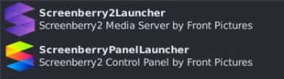
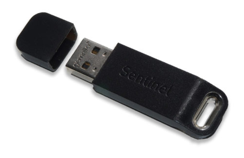

Install Screenberry¶
In this example we are going to install a One-computer setup on Ubuntu 20.04 LTS.
Note
One-computer setup => The Media Server and the Operator Workstation are run from the same computer. This setup is especially useful in the earlier stages when a user is familiarizing themselves with Screenberry functionality.
Two-computer setup => One computer is used as the Media Server and a second is used as the Operator Workstation.
Download and Install¶
Download the latest linux setup files on https://screenberry.com or ask the support to get a link for the latest version.
Open a terminal and type:
sudo apt-get install -f Screenberry2-2.*.*.deb
or:
sudo dpkg -i Screenberry2-2.*.*.deb
and wait until install finishes.
Also download the latest sentinel license dongle software unpack it and install.
In your system menu you will find two new entries:
Note
Screenberry2Launcher will launch the Media Server
ScreenberryPanelLauncher will launch the Operator Panel
USB License Dongle¶
You need to connect the USB License Dongle otherwise Screenberry will not run.
Note
On Windows Screenberry runs without dongle in demo mode, not on Linux!